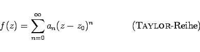
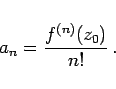
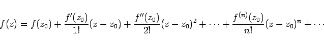
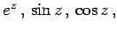

Inhalt Index DeskTop Bronstein

 Funktionentheorie Potenzreihenentwicklung analytischer Funktionen
Funktionentheorie Potenzreihenentwicklung analytischer Funktionen


Jede im Innern eines Gebietes G analytische Funktion f(z) kann für jeden Punkt z0 in G eindeutig in eine Potenzreihe der Form
|  | (14.48a) |
entwickelt werden, wobei der Konvergenzkreis der größte Kreis um z0 ist, der noch ganz dem Gebiet G angehört (s. Abbildung).
Für die im allgemeinen komplexen Koeffizienten an der Potenzreihe gilt
|  | (14.48b) |
Die TAYLOR-Reihe kann daher in der Form
|  | (14.48c) |
geschrieben werden. Innerhalb ihres Konvergenzkreises ist jede Potenzreihe die TAYLOR-Entwicklung ihrer Summenfunktion.
Beispiele für TAYLOR-Entwicklungen sind die Reihendarstellungen der Funktionen  und in Unterkapitel Elementare transzendente Funktionen.